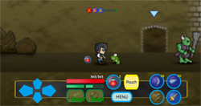
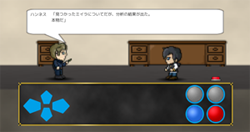

概要
Material Sagaは、１Ｐｌａｙ、５分から１０分程度で終わるレトロゲーム風お手軽ハック＆スラッシュ アクションゲームです。
横スクロールダンジョンをジャンプやスキルを駆使して進み、ボスを倒すとゲームクリアになります。
経験値によるレベルアップ、複数のドロップアイテム、シナリオモードを搭載しています。

|
操作

| 方向ボタン左右 | 右に移動、左に移動 |
| 方向ボタン上 | 調べる、ドアに入る、カーソルを上に移動 |
| 方向ボタン下 | ガード、カーソルを下に移動 |
| ボタン１ | スキル１を使用、キャンセル |
| ボタン２ | スキル２を使用、決定、ＯＫ |
| ボタン３ | スキル３を使用、鑑定 |
| ボタン４ | スキル４を使用、捨てる |
| Ｂｏｏｓｔソードボタン |
ブーストゲージを消費して、Ｂｏｏｓｔ状態になります。 |
| Ｂｏｏｓｔリングボタン |
ブーストゲージを消費して、Ｂｏｏｓｔ状態になります。 |
| Ｐｏｕｃｈボタン | ボタンのスキルをＰｏｕｃｈモードに切り替えます。 |
| Ｐｏｔｉｏｎボタン |
ポーションを１つ消費して、ＨＰを５０％か７５％回復します。 |
| Ｍｅｎｕボタン | メニュー画面を開く／閉じる |
| ＨＰゲージ | ＨＰです。 |
| ブーストタイムゲージ | 時間経過でブーストゲージが溜まります。 |
| ブーストダメージゲージ | ダメージを食らう／与えることでブーストゲージが溜まります。 |
ダンジョン
ダンジョンは横スクロールアクションになります。
敵を倒しアイテムを拾い、ボスを目指します。
|  |
アイテム
マテリアルストーン
アイテムはマテリアルストーンと呼ばれ、「剣ストーン」、「指輪ストーン」、「スキルストーン」、「合成石」、「ポーション」の５種類があります。
剣ストーン
「剣ストーン」は「Ｓｗｏｒｄ」に装備し、通常攻撃の攻撃力が上がります。
※剣は剣ストーンの力で作り出されているものです。実際に剣を持って歩いているわけではありません。
指輪ストーン
「指輪ストーン」は「Ｒｉｎｇ」に装備し、通常攻撃に対する防御力が上がります。
「指輪ストーン」にはマテリアルコントロールレベルが設定されていて、マテリアルコントロールレベルより高いマテリアルレベルの「スキルストーン」を装備することはできません。
スキルストーン
「スキルストーン」は、「Ｂａｓｉｃ」、「Ｐｏｕｃｈ」、「Ｂｏｏｓｔ」に装備して使用します。
「スキルストーン」を装備し、使用することで、設定されているスキルを使用します。
スキルは「スキルストーン」の使用回数だけ使用することができます。
「スキルストーン」の使用回数はＳｈｏｐで修理することができます。
合成石
「合成石」を使用し、Ｓｈｏｐで「スキルストーン」の合成を行うことができます。
ポーション
「ポーション」を拾うことができます。「ポーション」を最大まで所持している時には、ＨＰが回復します。
プラス能力
マテリアルストーンを装備すると、マテリアルストーンに表記されたプラス能力が足されます。プラス能力には「セイズ能力」、「Ｂｏｏｓｔ能力」、「ＳＰ能力」の３種類があります。
セイズ能力
黄色で表記されています。表記されている修正値が足されます。
Ｂｏｏｓｔ能力
オレンジで表記されています。Ｂｏｏｓｔ状態時のみ、表記されている修正値が足されます。Ｂｏｏｓｔ能力は「剣ストーン」と「指輪ストーン」のみ付与されます。
ＳＰ能力
緑で表記されています。表記されている効果を発揮します。
ハック＆スラッシュ
マテリアルストーンには、「スキル」、「セイズ能力」、「Ｂｏｏｓｔ能力」、「ＳＰ能力」がランダムで付与されます。マテリアルストーンは、敵、宝箱、ボスからどんどんドロップします。 装備、スキルを拾い集め、お気に入りにカスタマイズすることで冒険をさらに続けることができます。

|
装備
腕に装着している「クヴァシル」と呼ばれる腕輪に、マテリアルストーンを装備してスキルを使用します。
Ｓｗｏｒｄ
基本装備です。
「Ｓｗｏｒｄ」に装備したマテリアルストーンのプラス能力は、常に使用されます。
Ｒｉｎｇ
基本装備です。
「Ｒｉｎｇ」に装備したマテリアルストーンのプラス能力は、常に使用されます。
Ｂａｓｉｃ
基本装備です。スキル１は「ジャンプ」、スキル２は「アタック」に固定されています。
「Ｂａｓｉｃ」に装備したマテリアルストーンのプラス能力は、基本状態の時にだけ使用されます。
Ｐｏｕｃｈ
基本状態、Ｂｏｏｓｔ状態のどちらでも「Ｐｏｕｃｈボタン」を押すと使用できます。
「Ｐｏｕｃｈ」に装備したマテリアルストーンのプラス能力は、一切使用されません。
Ｂｏｏｓｔ
Ｂｏｏｓｔ状態で使用するスキルになります。
「Ｂｏｏｓｔ」に装備したマテリアルストーンのプラス能力は、Ｂｏｏｓｔ状態の時だけ使用されます。
※注意
ゲームを始めた状態では、「Ｂｏｏｓｔ」には何も装備されていません。この状態でＢｏｏｓｔ状態になると使用できるスキルが無くなってしまいます。
アイテムを集め「Ｂｏｏｓｔ」に装備するか、「Ｐｏｕｃｈ」に装備してスキルを確保してください。
また、ジャンプ、アタックは、「Ｂｏｏｓｔ」、「Ｐｏｕｃｈ」にコピーすることもできます。
※コピーした「ジャンプ」、「アタック」が必要なくなったら、「捨てるボタン」で捨ててください。
攻撃
攻撃は、アタックによる通常攻撃と、スキルストーンによるスキル攻撃があります。通常攻撃は命中力と回避力、スキル攻撃は魔力と抵抗力で判定を行います。 スキル攻撃は、スキルストーンの使用回数だけ行えます。通常攻撃には、使用回数の制限はありません。
ガード
「方向ボタン下」を押すとガードします。ガードは、前後関係なく行われます。通常攻撃は無効化します。スキル攻撃はダメージを半減します。 通常攻撃のクリティカルを受けるとガードクラッシュが発生し、ガードが無効化されます。
スウェースキル
スウェーが設定されているスウェースキルを使用すると、いかなるダメージも無効化します。スウェースキルは、前後に関係なく行われます。
コンボ
同じ系統のスキルを３回連続で使用するとコンボが成立し、３撃目のダメージが増加します。ただし、下記のいずれかの条件に該当するとコンボは発生しません。
- スキルが当たっていない。または回避されている。
- ダメージを受けた。
- スキルの使用間隔が開きすぎている。
- ３撃目にスウェースキルを使用した。
- ３撃目に無属性 魔系統のスキルを使用した。
※コンボは、同じ系統のスキルで発生します。同じ属性ではないことに注意してください。
（例）熱属性 火系統ファイア、熱属性 火系統ファイア、熱属性 火系統ファイア コンボする。
（例）熱属性 火系統ファイア、熱属性 火系統ファイア、熱属性 水系統アイス コンボしない。
無属性魔系統について
無属性 魔系統のスキルはコンボしません。代わりに異なる属性のスキルとのつなぎスキルになり、連続使用しづらいスキルのコンボと絡めて使用できます。
（例）熱属性 火系統ファイア、熱属性 火系統ファイア、無属性 魔系統エナジーボルト コンボしない。
（例）熱属性 火系統ファイア、無属性 魔系統エナジーボルト、熱属性 水系統アイス コンボする。
（例）無属性 魔系統エナジーボルト、無属性 魔系統エナジーボルト、光属性 光系統ヒール コンボする。
属性
属性はスキルの能力値です。属性を上げることでその属性の攻撃力と防御力を上げることができます。
ダメージが低いようなら使用するスキルの属性を上げ、敵の攻撃が大きいようなら敵のスキルの属性に割り振り、防御力を上げます。
属性の種類
属性には、「熱属性」、「森属性」、「光属性」、「無属性」の４種類があります。
熱属性
水系統と火系統の属性です。高い攻撃力が特徴です。
森属性
風系統と土系統の属性です。攻撃でだけでなくサポートスキルを含むのが特徴です。
光属性
光系統の属性です。回復スキルが特徴です。攻撃スキルが少ないため攻撃には不向きです。
無属性
魔系統と闇系統の属性です。サポートスキルから状態異常などユニークなスキルが特徴です。
属性ポイントの獲得
属性ポイントは、キャラクターがレベルアップするか、スキルを使用すると獲得できるスキル経験値が溜まることで獲得します。
属性ポイントの割り振り
獲得した属性ポイントは、メニューのステータス画面でいつでも割り振ることができます。
属性ポイントの割り振りのリセット
割り振った属性ポイントは、ステージ選択画面でメニューのステータス画面を開き、「Ｐｏｉｎｔ」を選択することでリセットすることができます。
アイテムランク

ステージを選択するとアイテムランクは３の状態でスタートします。ステージを素早くクリアしたり、隠された部屋でランクアップアイテムがドロップし、アイテムランクを上げることができます。
ドロップアイテム
アイテムランクが高いほど、ドロップアイテムのレア度が高くなります。しかし、アイテムランクが高くても低レアアイテム、低くても高レアアイテムがドロップする可能性があります。
復活
キャラクターのＨＰが０になるとアイテムランクが１つ減り、キャラクターはその場で復活します。アイテムランクが０の時にＨＰが０になると、ゲームオーバーになりステージ選択画面に戻ります。
※ゲームオーバーに対するデスペナルティーは特にありません。
広告
ステージ選択画面で「動画を見るボタン」を押し、動画を最後まで見るとアイテムランクが１つ増え４でスタートできます。
※広告に関する注意
- 「動画を見るボタン」は、通信環境によって押せないことがあります。
- 「動画を見るボタン」は、使用回数があり大事な時に押せないことがあります。
- 本アプリケーションは、動画広告モジュールのために通信を行っており、その動作のため通信料が発生する可能性があります。
以上の条件から、「動画を見るボタン」は効率的にお使いください。
※ランクアップアイテムは、ゲーム内でもドロップします。
宝箱
宝箱を見つけたら「方向ボタン上」で開けることができます。宝箱のアイテムは、敵からよりもちょっと良いアイテムがドロップします。ただし、宝箱には罠が掛かっていることがあります。
鑑定
多くのアイテムは未鑑定の状態でドロップします。未鑑定のアイテムは、アイテムの色でレア度が分かるようになっています。
ステージ選択画面に戻ったら「Ｍｅｎｕボタン」でメニューを開き、未鑑定のアイテムを選択し、「ボタン３（鑑定ボタン）」を押すことで鑑定画面に入ることができます。
鑑定画面の操作
- 鑑定選択画面では「方向ボタン左右」を押す、「左右にスクロールする」ことで、鑑定対象を変えることができます。
- 鑑定したいアイテムを選択したら「決定ボタン」で、鑑定動作に移ります。
- 「ボタン３」が緑の「一気に削るボタン」に変わったら、鑑定動作の始まりです。
- 鑑定動作では、画面の茶色いマスク部分をこすることで茶色のマスクが削れ、セイズ画像が表示されていきます。
- セイズ画像が３つ揃うと？。
うまく削れない場合や削るのが面倒な時は、「ボタン３」の「一気に削るボタン」で選択しているアイテムを一気に削ることができます。
合成
「合成石」を持っているとＳｈｏｐで合成メニューが選択できるようになります。
- 合成するには、セイズ能力を３つ獲得している「マテリアルストーン」が２つ必要になります。
- 合成では、２つのマテリアルストーンの「同じセイズ」のセイズ能力を一方に移し替えることができます。
- セイズ能力の修正値が違うだけの同じ能力の場合は、そのセイズ能力を入れ替えることしかできません。
- 能力を抜き取ったマテリアルストーンは消滅します。
おまけ
おまけ機能として、USB、Bluetooth接続のコントローラーを使うことができます。コントローラーをお使いになる場合には、「Ｏｐｔｉｏｎ」の「ＫｅｙＣｏｎｆｉｇ」でボタンを設定してください。
※コントローラーは、あくまでおまけ機能です。すべてのコントローラーの動作を保証するものではありません。また不具合等がおこっても対応はできません。
シナリオモード
沢村・ルディ・宏太は、友人であり相棒のバルド・ラッジとともにヨーロッパの小国へと訪れる。
やがて２人は寂れた洞窟で、盗まれたミイラを発見する。
洞窟の状態から、封印されているはずのマテリアルストーンが動き出したことを感じる２人。
そこに日本から駆け付けたネリー・バルテも加わり、３人は独自に調査を始める。
誰がマテリアルストーンを操っているのか？
マテリアルストーンは何をしているのか？
発見されたミイラとは？
調査の先に３人がたどり着く未来とは？
|  |
アクションポイント
セリフチェンジ
シナリオを進めていくと、緑の吹き出しが表示されることがあります。この吹き出しが表示されたときにアクションポイントがあれば、主人公のセリフを変えることができます。
主人公の返答がおかしいと思ったら積極的に変更してみましょう。
ミニゲーム
シナリオを進めていくと、ミニゲームが発生することがあります。ミニゲームをプレイするにもアクションポイントを消費しますので、アクションポイントの管理を大切に行ってください。
セーブデータについて
本アプリケーションは、携帯本体内にセーブデータを保管しています。 サーバーなどで管理していないため、携帯本体の故障、携帯本体の交換、セーブデータの異常、セーブデータの消失等によってセーブデータが失われても復旧する手段はありません。ご了承ください。
情報
バージョンアップは、Twitterにて発表しております。
説明動画は、YouTubeにて配信しております。